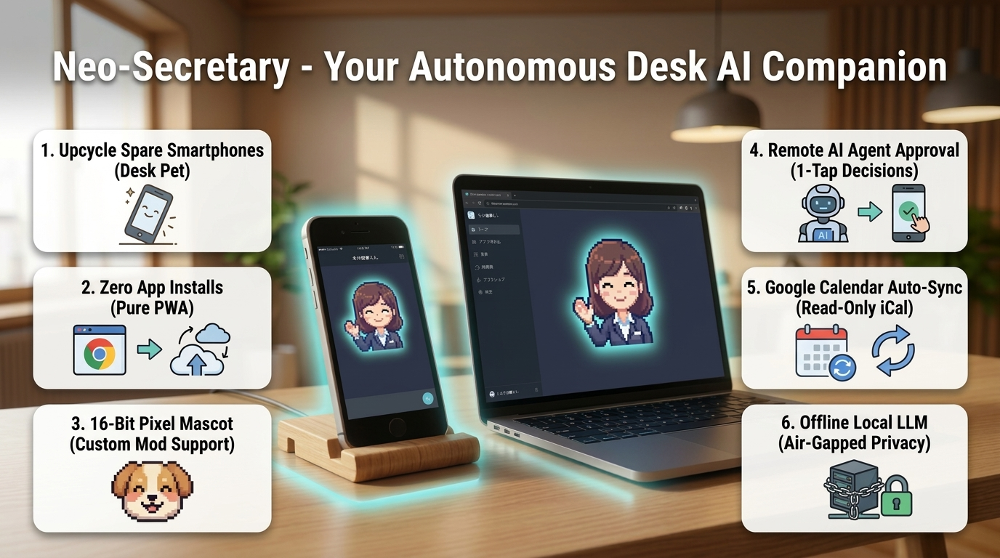
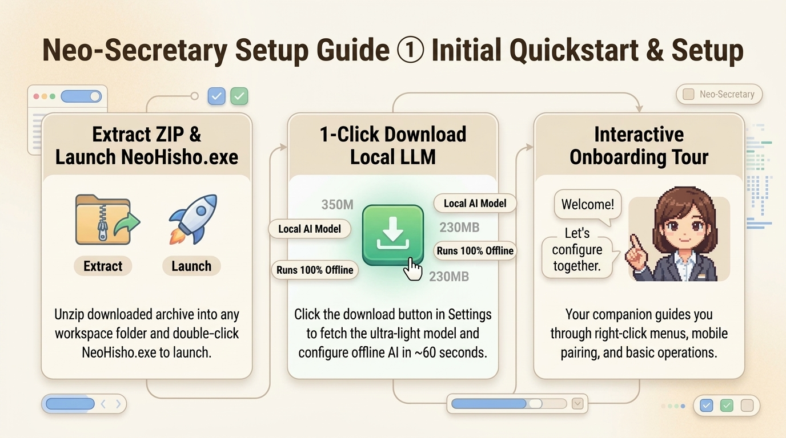
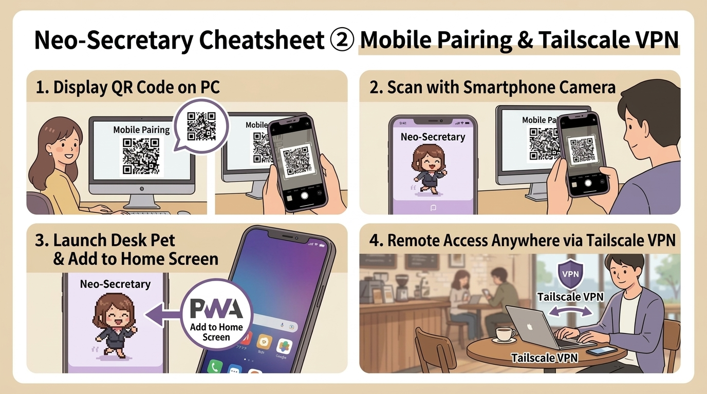
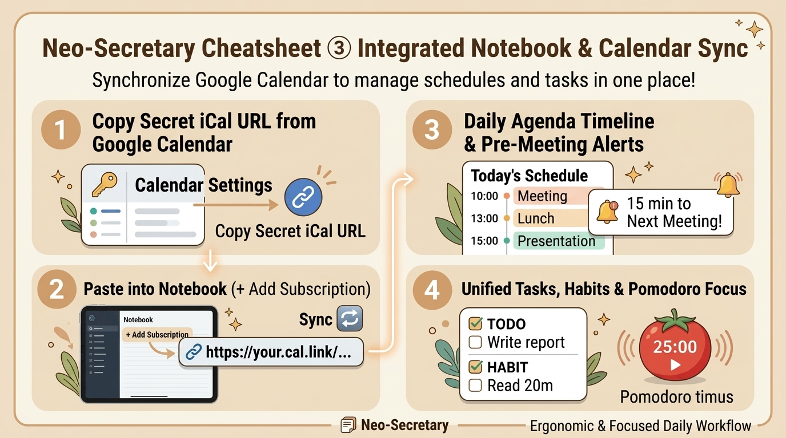
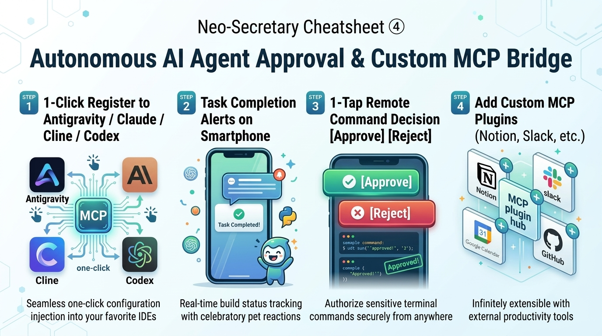
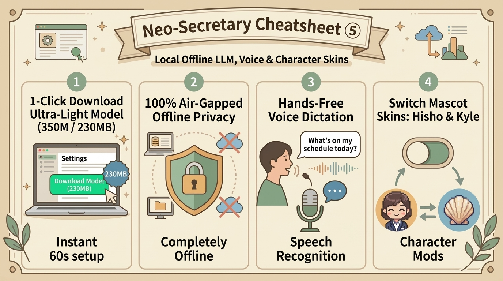

Neo-Secretary: Your Autonomous AI Companion
"Never let autonomous AI coding halt when you step away." Turn your spare smartphone into an adorable retro-style Desk Pet and remote approval cockpit for Claude Code, Cline, Cursor, and Codex.
🔥 6 Core Highlights of Neo-Secretary
A Day in the Life with Neo-Secretary
How developers and power users eliminate downtime while delegating heavy tasks to autonomous AI agents.
1. Step Away During Heavy AI Coding Runs
Delegating large-scale refactoring, test suites, or package updates to Claude Code, Cline, Cursor, or Codex.
[✅ Approve] with one hand. No need to run back to your PC.2. Proactive Briefing & Timeboxing
Start your workday with automated schedule synchronization and timeline organization.
Submit budget report tomorrow at 5pm #finance !high to schedule deadlines instantly.3. Pomodoro Focus & Ergonomic Care
Prevent developer burnout while maintaining peak flow state.
4. Confidential Enterprise Work
Process proprietary code, meeting notes, and private ideas with zero cloud leakage.

Initial Setup & Quickstart Guide
From downloading the binary to 1-click offline local LLM setup in under 2 minutes.
Extract Release ZIP and Launch
Download NeoHisho.zip from GitHub Releases, extract to any folder, and double-click NeoHisho.exe (or start.bat if running from source). The companion appears at the bottom-right of your screen.
Enable Local LLM (Zero API Keys Needed)
Right-click the pet ➔ "⚙️ Settings" ➔ "🧠 AI Model" tab. Click "⚡ Download Ultra-Light Model (350M / 230MB)". In ~60 seconds, your air-gapped local AI assistant is fully operational.
Take the 3-Step Interactive Onboarding Tour
On first launch, your pet guides you through right-click menus, mobile pairing, and conversational tasks. You can re-trigger this tour anytime from Settings.
📘 Neo-Secretary Cheatsheet ① [Initial Setup & Environment]
Last Updated: 2026-09-13
Fast-track guide to downloading, starting, and configuring Neo-Secretary.
🚀 1. Installation Steps
- Extract the Distribution Archive: Unzip
NeoHisho.zipto your preferred workspace directory. - Run the Executable: Double-click
NeoHisho.exe. Your retro pixel pet will appear on your desktop.
🔒 2. Zero-Config Air-Gapped Privacy Mode (Recommended)
To use the app without cloud API keys and ensure complete data privacy:
- Right-click the pet ➔ select "⚙️ Settings".
- Under the "🧠 AI Model" tab, find the "Embedded Local LLM" card.
- Click "⚡ Download Ultra-Lightweight Model (350M / 230MB)".
- The model downloads in ~1 minute and configures
DEFAULT_LLM_PROVIDER=local_ggufautomatically.
⚙️ 3. Settings Window Structure
| Tab | Primary Function | Use Case |
|---|---|---|
| 🧠 AI Model | Toggle between Local GGUF, Google Gemini, Anthropic Claude, and OpenCode | Offline inference or high-speed cloud reasoning |
| 🤖 External AI / MCP | Register to Claude Code, Cline, Cursor, Codex, and manage MCP tools | Remote one-tap command approvals |
| 📅 External Integrations | Google Calendar read-only iCal sync, Tailscale VPN hostname | Schedule timeline & remote mobile access |
| 📖 Guide & Diagnostics | Self-diagnostics, interactive tour replay, shortcut cheatsheet | Troubleshooting and feature reference |

Mobile Desk Pet PWA & Tailscale VPN Guide
Turn your unused smartphone into a live desktop cockpit. Works on local Wi-Fi or securely over cellular/remote networks.
2. Right-click pet ➔ 📱 Mobile Connect.
3. Scan the QR code with phone camera.
4. Tap "Add to Home Screen" for full-screen PWA mode.
2. On PC, run
tailscale serve 8765.3. In Neo-Secretary Settings, enter your Tailscale machine name.
4. Scan the dedicated Tailscale QR code.
Note: 8765 is the default port. If you changed it via NEO_HISHO_PORT, substitute that value.
📱 Neo-Secretary Cheatsheet ② [Mobile Pairing & Zero-Trust PWA]
Last Updated: 2026-09-13
🛡️ Zero-Trust Security Guarantees
- Cryptographic Bearer Token: Each mobile pairing receives an ephemeral 256-bit token. DB stores only salted SHA-256 hashes.
- Fail-Closed Pairing Window: Tokens are generated only while the QR dialog is actively open on the desktop. Outside the window, connection requests are rejected with
401 Unauthorized. - Anti-Self-Approval Isolation: Command approval requests originating from the same IP as the requester are blocked, preventing malicious LAN self-escalation.
💡 PWA Full-Screen Tip
On iOS Safari, tap Share ➔ Add to Home Screen. On Android Chrome, tap Menu ➔ Install App. This enables wake-lock keep-alive, vibration haptics, and clean full-screen display without browser address bars.

Digital Notebook, Tasks & Google Calendar Sync
Timeline schedule management, quick natural-language task creation, and habit tracking.
Tomorrow 2pm Client review #work !high in the chat bubble to create prioritized tasks with automated date parsing.📅 Neo-Secretary Cheatsheet ③ [Notebook, Tasks & Habits]
Last Updated: 2026-09-13
⚡ Quick Natural Language Syntax
| Input Phrase | Parsed Due Date | Priority / Tag |
|---|---|---|
Submit report tomorrow 18:00 !3 #finance | Tomorrow 18:00 | Priority 3 (High), #finance |
Gym workout next monday morning #habit | Next Monday 09:00 | Normal, #habit |
Quick meeting in 30 minutes !urgent | +30 mins from now | Urgent (Top) |

Autonomous AI Coding Remote Approval Cockpit
Bridge Claude Code, Cline, Cursor, and Codex with your mobile phone. Features a 3-Tier Policy Engine and SQLite Audit Logging.
🛡️ 3-Tier Smart Approval Policy Engine
🤖 Neo-Secretary Cheatsheet ④ [Agent Approval Platform & MCP Bridge]
Last Updated: 2026-09-13
⚡ MCP Tools Specification (`neo_hisho_bridge`)
| MCP Tool Name | Arguments | Description |
|---|---|---|
ask_human_approval | command, summary, agent_name | Forwards a bash command or action for user remote authorization. |
notify_task_completed | title, message, agent_name | Triggers celebratory confetti and joyful bounce animations on mobile. |
notify_user_input_needed | question, choices, agent_name | Requests textual clarification or multi-choice input on mobile. |
remember_boss_insight | category, insight | Persists architectural lessons and user preferences into long-term DB memory. |

Local Offline LLMs & Character Skins
Liquid AI LFM2.5 lightweight models, retro 16-bit sound effects, and custom pixel mascot mods.
assets/characters/ to build your own companion!🧠 Neo-Secretary Cheatsheet ⑤ [Local LLM & Custom Skins]
Last Updated: 2026-09-24 23:50
👾 Adding Custom Character Mods
Create a new folder inside assets/characters/<your_character_name>/ containing:
idle.png(Default neutral standing frame, 128x128 pixel art)talk.png(Mascot talking frame)happy.png&celebrate.png(Joyful reaction frames)
Restart Neo-Secretary and select your new mascot right from the Settings menu!
Troubleshooting & FAQ
Quick solutions for common connection and configuration questions.
Q1: The QR code won't open on my phone browser.
A: Ensure both your PC and phone are connected to the exact same Wi-Fi router. If Windows Defender Firewall shows a popup, click "Allow access for Private Networks". You can also test binding port 8765 via Tailscale VPN.
Q2: Can I use this with Claude Code without running a server manually?
A: Yes! NeoHisho.exe launches the sync server and internal MCP server automatically in the background. Adding the MCP server entry into Claude Code takes just one command.
Q3: How does Anti-Self-Approval prevent security exploits?
A: If an agent running on 127.0.0.1 requests approval, Neo-Secretary refuses to accept approval decisions from 127.0.0.1. Approvals must originate from a verified mobile client with a cryptographically signed Bearer token.
Q4: What happens if I lose my internet connection?
A: Neo-Secretary operates entirely on your local area network (LAN). All features—including MCP command approvals, offline GGUF chat, tasks, and habit tracking—function 100% reliably without an external internet connection.